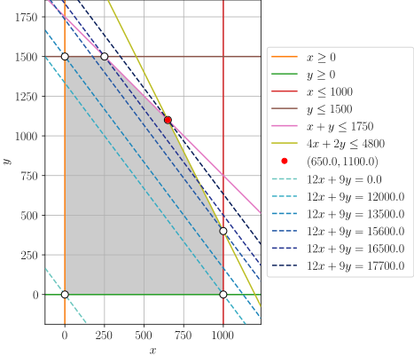

2.1 BIM production#
Preamble: Install Pyomo and a solver#
The following cell sets and verifies a global SOLVER for the notebook. If run on Google Colab, the cell installs Pyomo and the HiGHS solver, while, if run elsewhere, it assumes Pyomo and HiGHS have been previously installed. It then sets to use HiGHS as solver via the appsi module and a test is performed to verify that it is available. The solver interface is stored in a global object SOLVER for later use.
import sys
if 'google.colab' in sys.modules:
%pip install pyomo >/dev/null 2>/dev/null
%pip install highspy >/dev/null 2>/dev/null
solver = 'appsi_highs'
import pyomo.environ as pyo
SOLVER = pyo.SolverFactory(solver)
assert SOLVER.available(), f"Solver {solver} is not available."
The microchip production problem#
Problem description#
The company BIM (Best International Machines) produces two types of microchips, logic chips (1g silicon, 1g plastic, 4g copper) and memory chips (1g germanium, 1g plastic, 2g copper). Each of the logic chips can be sold for a 12€ profit, and each of the memory chips for a 9€ profit. The current stock of raw materials is as follows: 1000g silicon, 1500g germanium, 1750g plastic, 4800g copper. How many microchips of each type should be produced to maximize profit while respecting the availability of raw material stock?
Building the optimization problem#
Let \(x \geq 0\) denote the number of logic chips to be produced and \(y \geq 0\) the number of memory chips. In the problem described above, the goal is to maximize the total profit. Since for each logic chip the profit is 12 euro, and for each memory chip it is 9 euro, the total profit to maximize is equal to
In maximizing this quantity, we have to respect some constraints. We know that we cannot use more raw materials than those are available in stock.
For silicon, this means that the joint usage for logic chips, which is equal to \(4x\) g (4g per chip for each of the \(x\) chips), and for memory chips, which is equal to \(y\) g (1g per chip for each of the \(y\) chips), cannot exceed the maximum availability of 1000g of silicon:
Similarly, we can deduce the condition for germanium where only the memory chip plays a role (logic chips don not require this element),
for plastic,
and for copper, $\( 4x + 2y \leq 4800. \)$
This decision can be reformulated as an optimization problem of the following form:
Leveraging the fact that we have a two-dimensional problem, we can then visualize the entire feasible region.

The feasible region is displayed in gray, enclosed by the linear constraints (solid lines). The isolines corresponding to the objective function are displayed as parallel dashed blue lines with increasing color intensity when the objective function value is larger. We can intuitively already guess the optimal solution, which is marked with a red dot.
Matrix reformulation of the BIM problem#
This problem is relatively small, featuring only \(n=2\) decision variables and \(m=4\) constraints. However, it is easy to imagine that adding more products and constraints would significantly complicate matters. In such cases, explicitly listing each constraint and fully expanding all expressions could obfuscate the overall structure, making it challenging to discern the key aspects of the problem. In fact, it is much more common to formulate, analyze, and compare linear optimization problems using vectors and matrices. This format not only aligns more closely with computational implementation, but also greatly facilitates the identification of the similarities between various LO problems, regardless of whether they are about chip production or food manufacturing.
If you are new or need to refresh on how equations and inequalities can be formulated using vectors and matrices, we refer you to the book.
As a first step towards building a vector-matrix formulation of our problem, we rename the decision variables \(x\) and \(y\) as \(x_1\) and \(x_2\), obtaining
Denote the vector of decision variables by \(x = \begin{pmatrix} x_1 \\ x_2 \end{pmatrix}\), where \(x_1\) and \(x_2\) are just the respective components.
We now rewrite the objective function using the vector form. For this, we define the vector
so that the objective
For the constraints, we define the problem coefficients as
The system of inequalities \(A x \geq b\), when read row-by-row, correctly replicates all the constraints:
In this way, our optimization problem becomes:
This model can be implemented and solved using Pyomo as follows.
import pyomo.environ as pyo
model = pyo.ConcreteModel("BIM")
# Decision variables and their domains
model.x1 = pyo.Var(domain=pyo.NonNegativeReals)
model.x2 = pyo.Var(domain=pyo.NonNegativeReals)
# Objective function
model.profit = pyo.Objective(expr=12 * model.x1 + 9 * model.x2, sense=pyo.maximize)
# Constraints
model.silicon = pyo.Constraint(expr=model.x1 <= 1000)
model.germanium = pyo.Constraint(expr=model.x2 <= 1500)
model.plastic = pyo.Constraint(expr=model.x1 + model.x2 <= 1750)
model.copper = pyo.Constraint(expr=4 * model.x1 + 2 * model.x2 <= 4800)
# Solve and print solution
SOLVER.solve(model)
print(f"x = ({model.x1.value:.1f}, {model.x2.value:.1f})")
print(f"optimal value = {pyo.value(model.profit):.1f}")
x = (650.0, 1100.0)
optimal value = 17700.0
Pyomo offers an alternative approach that leverages Python decorators for defining both objective functions and constraints. Employing decorators enhances the readability and maintainability of Pyomo models, and is thus adopted as the default convention throughout this series of notebooks. The next cell demonstrates how to utilize decorators to specify the objective and constraints for the BIM problem.
model = pyo.ConcreteModel("BIM with decorators")
# Decision variables and their domains
model.x1 = pyo.Var(domain=pyo.NonNegativeReals)
model.x2 = pyo.Var(domain=pyo.NonNegativeReals)
# Objective function defined using a decorator
@model.Objective(sense=pyo.maximize)
def profit(m):
return 12 * m.x1 + 9 * m.x2
# Constraints defined using decorators
@model.Constraint()
def silicon(m):
return m.x1 <= 1000
@model.Constraint()
def germanium(m):
return m.x2 <= 1500
@model.Constraint()
def plastic(m):
return m.x1 + m.x2 <= 1750
@model.Constraint()
def copper(m):
return 4 * m.x1 + 2 * m.x2 <= 4800
# Solve and print solution
SOLVER.solve(model, tee=False)
print(f"x = ({model.x1.value:.1f}, {model.x2.value:.1f})")
print(f"optimal value = {pyo.value(model.profit):.1f}")
x = (650.0, 1100.0)
optimal value = 17700.0
Canonical form for LO problems#
We will now present a generalized form of an LO problem using vectors and matrices and demonstrate how it encompasses the specific instance described above.
A significant advantage of expressing problems in concise matrix form is not only a reduction in space but also the clarity it provides in revealing the similarities across problems from different domains. This uniformity allows also us to use a single tool (a solver) to solve all of them. Furthermore, when unnecessary details and equations are abstracted into a single matrix-vector expression, the theoretical analysis of linear optimization problems is streamlined, facilitating the exploration of the following key questions:
Is there an optimal solution?
Is there only one or more solutions?
How do we prove the optimality of a solution?
To answer such questions in one go for an entire class of optimization problem, it is customary to define a so-called \textit{canonical form} of the optimization problem, which specifies (i) whether the objective is a maximization or minimization, (ii) if the constraints are inequalities or equalities, and (iii) what signs do the variables take. Once we commit to a specific canonical form, we can derive all sorts of useful results and properties, which will hold for all problems in the considered class anyway (because any problem can be transformed to a given form), without the need of considering cases like ‘if the problem is a maximization then …, and if it is a minimization then…’.
In this book, we adhere to the standard convention of representing LO problems with an objective of minimization, all constraints being of the \(\geq\) type, and all variables being nonnegative. In other words, we work with the following general formulation:
A general linear optimization (LO) is a problem of the form
where the \(n\) (decision) variables are grouped in a vector \(x \in \mathbb{R}^n\), \(c \in \mathbb{R}^n\) are the objective coefficients, and the \(m\) linear constraints are specified by the matrix \(A \in \mathbb{R}^{m \times n}\) and the vector \(b \in \mathbb{R}^m\).
Of course, LO problems could also
be maximization problems,
involve equality constraints and constraints of the form \(\geq\), and
have unbounded or non-positive decision variables \(x_i\)’s.
In fact, any LO problem with such characteristics can be easily converted to the canonical form by adding/removing variables and/or multiplying specific inequalities by \(-1\). To illustrate this point, we shall convert our example problem to this canonical form, building upon the formulation we already had.
BIM problem in canonical form#
We begin transforming the LO problem mentioned above into its canonical form, starting with its objective. Maximization of a given quantity is equivalent to minimization of the negative of that quantity, therefore setting
will be enough because
For the constraints, we can also multiply all the left-hand and right-hand side coefficients by \(-1\) to build the following matrix and vector: $\( \begin{align*} \overline{A} = \begin{bmatrix} -1 & 0\\ 0 & -1\\ -1 & -1\\ -4 & -2\\ \end{bmatrix}, \quad \text{ and } \quad \overline{b} = \begin{pmatrix} -1000 \\ -1500 \\ -1750 \\ -4800 \end{pmatrix}. \end{align*} \)$
One can easily check that the system of inequalities \(\overline{A} x \geq \overline{b}\), when read row-by-row, indeed yields all the problem constraints:
We have thus reformulated our original problem to its canonical form as:
Using the numpy library, we can implement and solve the problem using Pyomo as follows.
import numpy as np
model = pyo.ConcreteModel("BIM in matrix form")
# Define the number of variables and constraints
n_vars = 2
n_constraints = 4
# Decision variables and their domain
model.x = pyo.Var(range(n_vars), domain=pyo.NonNegativeReals)
# Define the vectors and matrices
c = np.array([-12, -9])
A = np.array([[-1, 0], [0, -1], [-1, -1], [-4, -2]])
b = np.array([-1000, -1500, -1750, -4800])
# Objective function
model.profit = pyo.Objective(
expr=sum(c[i] * model.x[i] for i in range(n_vars)), sense=pyo.minimize
)
# Constraints
model.constraints = pyo.ConstraintList()
for i in range(n_constraints):
model.constraints.add(expr=sum(A[i, j] * model.x[j] for j in range(n_vars)) >= b[i])
# Solve and print solution
SOLVER.solve(model)
optimal_x = [pyo.value(model.x[i]) for i in range(n_vars)]
print(f"x = {tuple(np.round(optimal_x, 1))}")
print(f"optimal value = {-pyo.value(model.profit):.1f}")
x = (650.0, 1100.0)
optimal value = 17700.0
We can streamline also this Pyomo model using decorators. Additionally, we also make use of Pyomo’s `Set()’ component to define two index sets, one for the variables and one for the constraints. This allows us to avoid hard-coding the indices in the constraints, which makes the model more readable and maintainable.
model = pyo.ConcreteModel("BIM in matrix form using decorators and index sets")
# Define the number of variables and constraints and two corresponding index sets
n_vars = 2
n_constraints = 4
model.I = pyo.Set(initialize=range(n_vars), doc="Set of variables")
model.J = pyo.Set(initialize=range(n_constraints), doc="Set of constraints")
# Decision variables and their domain (using the index set I)
model.x = pyo.Var(model.I, domain=pyo.NonNegativeReals)
# Define the vectors and matrices
c = np.array([-12, -9])
A = np.array([[-1, 0], [0, -1], [-1, -1], [-4, -2]])
b = np.array([-1000, -1500, -1750, -4800])
# Objective function using decorator
@model.Objective(sense=pyo.minimize)
def profit(m):
return sum(c[i] * m.x[i] for i in model.I)
# Constraints using decorators and the index set J
@model.Constraint(model.J)
def constraints(m, j):
return sum(A[j, i] * m.x[i] for i in model.I) >= b[j]
# Solve and print solution
SOLVER.solve(model)
optimal_x = [pyo.value(model.x[i]) for i in range(n_vars)]
print(f"x = {tuple(np.round(optimal_x, 1))}")
print(f"optimal value = {-pyo.value(model.profit):.1f}")
x = (650.0, 1100.0)
optimal value = 17700.0